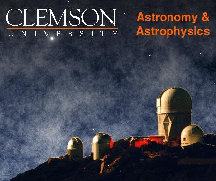
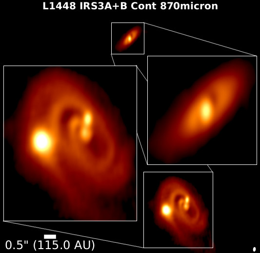
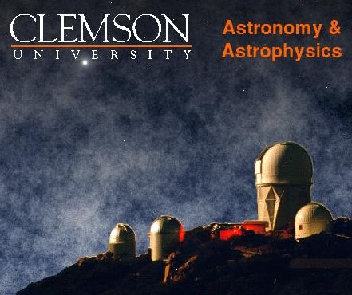
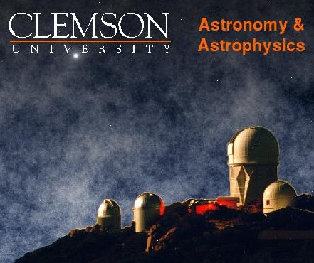

Astronomy compels the soul to look upwards and leads is from this world to another - Plato
Who Am I?
My name is Nickalas Reynolds. I am a first year graduate assistant at the University of Oklahoma. I spend most of my time analyzing data retrieved by ALMA and working on the small radio telescope hosted by the University of Oklahoma on top of Nielsen Hall.
A hobby that I enjoy is imaging astronomical objects on the 16 inch telescope.
I went to Clemson University for my Bachelors degree in Physics ('16) and am currently attending the University of Oklahoma for my Ph.D. in Astronomy.

...Man explores the universe around him and calls the adventure science - Edwin Hubble
Current Projects
My current projects include: developing firmware packages for high frequency receivers, updating and maintaining hardware at the optical observatory, and streamlining optical spectrosopic analysis using IRAF.
You can also view my public files in the social bar.
The sky calls to us. If we do not destroy ourselves, we will one day venture to the stars. - Carl Sagan
Research
Current
I am currently working with Dr. John Tobin,OU, on reducing ALMA cycle 4 data. This is an interesting forming triple star system located in the Perseus Cluster, L1448.
Another project is the evaluating of column densities from a few hundred Class I/II protostars in Orion using the IRAM 30m telescope in Granada, Spain.

Past
I worked with Dr. Sean Brittain, CU, on understanding and further catagorizing Herbig Ae/Be protostars. We analyzed different isotopologues to understand the disk kinematics of various systems.
Papers
A link to my current papers can be found on NASA/ADS or the arxiv:
 

Colleagues
I have been very fortunate to work with these amazing people: